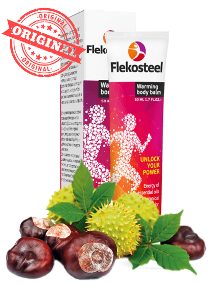
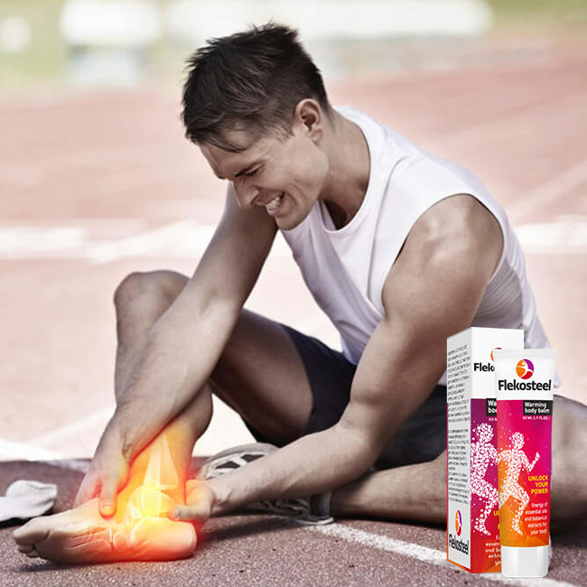
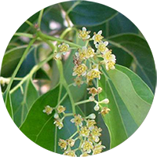
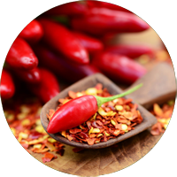
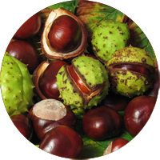
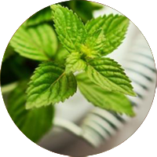
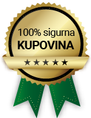

Bolovi u predelu leđa, vrata i zglobova više nisu nerešiv problem!
Probajte Flekosteel, 100% prirodni preparat koji se koristi kod brojnih oboljenja i
povreda
koje izazivaju nelagodu i bolove u leđima, vratu i zglobovima.

Ovaj svetski poznat preparat koristi se kod:
- Bolova u predelu leđa, vrata i zglobova
- Uklanjanja hipertonusa mišića
- Sportskih i drugih povreda
- Svih vrsta upala mišića
- Smanjenja otoka u zglobovima
Zvanična prodaja i dostava za Srbiju
U toku je akcija u kojoj trenutno Flekosteel možete kupiti 50%
jeftinije
Iskoristi popust i naruči
Zemlja porekla: Rusija
Proizvođač: Hendel's Garden
Rok trajanja: 2 godine
Bolovi u zglobovima i leđima su jako česta pojava!
Oboljenja koja izazivaju bolove ili nelagodu u zglobovima, leđima ili vratu veoma su
česta pojava kod svih starosnih dobi. Bilo da su posledica godina, užurbanog
života ili nastaju usled sportskih povreda, smatra se da svaka treća osoba iznad 30 godina
oseća ove bolove.
Osim toga, mnogi od nas trpe posledice oboljenja kao što su ostehondroza, reumatizam,
artritis, išijas...
Ovi bolovi često utiču na svakodnevne aktivnosti i izazivaju osećaj bespomoći, kao da ne postoji
rešenje niti lek.
Međutim ovo nije nerešiv problem. Preparati kao Flekosteel već godinama se koriste
kako bi ublažili i otklonili sve vrste bolova u zglobovima, kičmi ili vratu.

Flekosteel je gel koji mogu koristiti osobe svih starosnih dobi, a podjednako je
efikasan i kod muškaraca i kod žena.
Deluje lokalno, prodire direktno u artikličku kapsulu s ciljem eliminisanja bolova i
nelagode u potpunosti.
Ali to nije sve. Osim što se koristi kod uklanjanja bolova, Flekosteel se upotrebljava i kod
obnavljanja oštećene hrskavice, upala te za normalno funckionisanje zglobova, bez obzira da
li ste u godinama ili ste mlada i aktivna osoba.
Ne izaziva osećaj nelagode, a zahvaljujući svojim prirodnim sastojcima, Flekosteel nakon korišćenja
stvara i ugodan osećaj koji lagano greje vaše mišiće i zglobove.
Od čega se sastoji i kako se koristi Flekosteel
Flekosteel je sačinjen od prirodnih sastojaka i ekstrakata pa
kao takav ne iritira vašu kožu a nakon što ga nanesete
deluje dubinski i prodire u sam izvor
problema i
bolova. Sastojci od kojih je sačinjen Flekosteel su:

Kamfor
U našem narodu često se koristi
kod upala, za obloge i za masažu

Ekstrakt ljute paprike
Često se koristi kod reume i
bolova u zglobovima

Divlji kesten
Koristi se protiv upala te protiv
artritisa i reume

Ulje mente
Koristi se za opuštanje mišića i
protiv bolova u zglobovima
Kako se koristi Flekosteel
1. Flekosteel nanesite na suvu kožu i
masirajte dok koža ne upije
2. Ne ispirajte namazano područje
vodom najmanje sat vremena
3. Flekosteel koristite 2 do 3 puta dnevno
za maksimalan efekat
Iskoristi popust i naruči
Jednostavna narudžba, brza isporuka i plaćanje pouzećem
Nakon što popunite kratki formular i naručite proizvod, naš operater će vas pozvati (u
toku radnog vremena) da
potvrdi vašu narudžbu. Flekosteel će biti dostavljen na vašu kućnu adresu u
najkraćem roku, a osim navedene
cene NEMATE dodatnih troškova i nema plaćanja unapred!
Plaćanje se vrši pouzećem, tek kad dobijete proizvod
